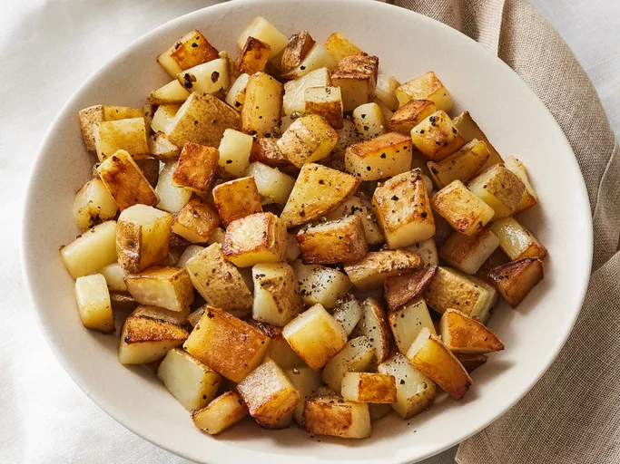

Home
Odin Recipes
Fries

Description
Fries are a delicious treat. While unhealthy when ordered from restaurants, cooking them at home
makes them healthier.
Ingredients
- 3 medium russet potatoes, cubed
- 3 tablespoons butter or margarine
- salt and ground black pepper to taste
Steps
- Gather all ingredients.
- rinse potatoe cubes with cold water and drain well.
- Melt butter in a large skillet over medium heat. Place in the skillet and season with salt
and pepper; mix well. Cover and cook for 10 minutes.
- Remove the lid and cook, turning frequently, until brown and crisp on all sides, about 10 more minutes.
- Serve and enjoy!